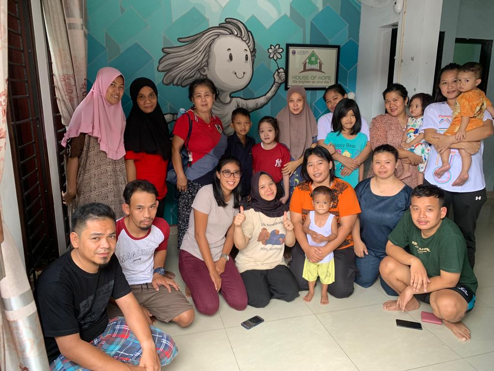
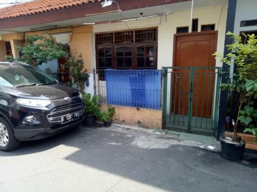

Tentang Kami
Temukan kisah kami dalam menyediakan layanan Rumah Singgah.
Latar Belakang
Penyakit Jantung Bawaan pada Anak
Anak dengan sakit jantung sebelumnya sangat jarang didengar bahkan diketahui oleh banyak orang, karena sakit jantung biasanya identik dengan mereka yang memiliki usia tua. Namun saat ini sesuai perkembangan informasi tidak dapat dihindari bahwa penyakit jantung bawaan pada anak itu ada, bahkan dapat diketahui sejak dalam kandungan ibu melalui beberapa tes seperti ultrasonografi (USG), deteksi dengan metode Doppler, tes PAPP-A hingga AFP, tes non-invasif seperti USG 3D hingga 4D, dan dengan cara lainnya sesusai perkembangan dunia kedokteran saat ini.
Rata-rata di Indonesia anak-anak dengan penyakit jantung bawaan pada anak terdeteksi pasca lahir mulai rentang waktu dari 0 bulan hingga 5 tahun saat berbagai macam keluhan dan gejala-gejala yang muncul. Tindakan pertama yang diambil adalah echo atau echocardiography lalu penanganan dan pengobatan selanjutnya akan disesuaikan dengan jenis dan tingkat keparahan penyakit jantung bawaan yang didiagnosis.
Contoh umum dari jenis-jenis penyakit jantung bawaan pada anak:
Rumah Sakit
Rumah Sakit di Jakarta dengan Departemen Kardiologi Anak dan mampu menangani penyakit jantung bawaan pada anak:
Karena penyakit jantung bawaan pada anak adalah kasus yang sangat khusus penanganannya rumah sakit tersebut di atas banyak menerima rujukan dari berbagai macam daerah kabupaten hingga provinsi dari Sumantera hingga Papua. Dengan pengalaman yang matang dalam penanganan pasien peyakit jantung bawaan pada anak rumah sakit tersebut di atas mampu memberikan pengobatan terbaik hingga kesembuhan untuk anak dengan penyakit jantung bawaan.
Orang Tua dan Keluarga Pasien
Bagi kebanyakan orang tua dan keluarga pasien pemilik anak dengan diagnosis penyakit jantung bawaan yang sedang berjuang menjalani pengobatan di rumah sakit adalah sebuah anugerah karena diberi kemampuan oleh Tuhan untuk menemani, mendampingi dan menuntun anak spesial mereka dalam menjalani pengobatan dan mencari kesembuhan. Harapan besar adalah anak mereka dapat sembuh dan menjadi seperti anak sehat pada umumnya.
Bagi orang tua atau keluarga pasien harapan tersebut diatas selalu menjadi kekuatan untuk menajalani hari-hari selama pengobatan anak di Jakarta. Dengan latar belakang pendidikan, ekonomi dan budaya yang berbeda mereka bertemu dengan orang tua atau keluarga pasien yang lain di rumah sakit. Karena pasien dengan penyakit jantung bawaan pada anak di Indonesia khususnya yang melakukan pengobatan di Jakarta sangat banyak. Hal tersebut juga menjadi penyemangat tambahan karena bisa saling mendukung dan menguatkan antar sesama orang tua atau keluarga pasien dengan penyakit spesial ini.

Komunitas "Pejuang Cipto Community"
Bertemunya para orang tua pasien dengan beban dan harapan yang sama ini telah menyatukan mereka hingga terbentuk sebuah komunitas. Komunitas "Pejuang Cipto Community" adalah salah satu komunitas khusus orang tua anak spesial dengan penyakit jantung bawaan pada anak. Komunitas ini berdiri pada tanggal 10 Juni 2019 di Jakarta, didirikan oleh orang tua pasien anak spesial dengan penyakit jantung bawaan sejak lahir. Secara khusus para orang tua dan keluarga pasien yang sedang menjalani pengobatan di Rumah Sakit Dr. Cipto Mangunkusumo. Arti Pejuang Cipto adalah para pejuang yaitu orang tua pasien yang sedang menemani, mendampingi dan menuntun anak baik pengobatan ringan hingga mengantar mereka ke meja operasi di Rumah Sakit Dr. Cipto Mangunkusumo ini. Itulah awal penamaan komunitas ini.
Pendirinya adalah Dwi Hermawati dengan pasien anak spesial bernama Chester Dashtan Rosyadi. Menjalani pengobatan mulai dari tahun 2017 hingga akhirnya menjalani operasi pada akhir tahun 2018.
Dengan kepedulian kepada sesasma orang tua maka mulai dari mendirikan group whatsapp para orang tua pasien dengan hanya beberapa anggota saja, karena semangat belajar dan peduli Dwi Hermawati kepada sesama orang tua dan khususnya pasien penyakit jantung bawaan pada anak maka Dwi Hermawati dapat membantu para orang tua pasien melalui konsultasi, informasi pengobatan tahap persiapan dan langkah-langkah yang harus dilakukan para orang tua mulai dari fasilitas kesehatan di daerah dan mendapat rujukan ke Jakarta. Komunitas ini terus berkembang hingga menjadi besar dan saat ini jumlah anggota group whatsapp +- 700 orang para orang tua pasien anak dan kemungkinan terus akan bertambah. Dwi Hermawati tidak sendiri namun didukung para orang tua hebat lainnya yang ikut terbeban dan merasakan butuhnya keberadaan komunitas ini.
Dengan berkembangnya komunitas ini muncul banyak pembahasan salah satunya kebutuhan utama dan terpenting para orang tua pasien khususnya yang berasal dari luar Jakarta yaitu adalah tempat tinggal sementara. Para orang tua pasien dari daerah (luar Jakarta) selama dan sejauh ini mulai dari proses pendaftaran, pengobatan, menunggu jadwal operasi hingga perawatan pasca operasi biasanya mencari tempat tinggal seperti kost, rumah singgah atau rumah keluarga.
Biaya kost di Jakarta cukup besar, rumah singgah yang ada rata-rata untuk pasien campur baik anak dan dewasa dengan berbagai macam jenis penyakit dan tidak semua memiliki keluarga di Jakarta untuk dapat menumpang tinggal selama berada di Jakarta. Permasalahan ini menjadi salah satu fokus komunitas dan dijadikan sebagai projek utama untuk membantu para orang tua pasien dari daerah.

Rasa syukur dan bahagia atas kebaikan Tuhan, pada tahun 2020 komunitas ini dipertemukan dengan orang baik, dia adalah Ibu Sukian yang bersedia rumahnya dipergunakan sebagai Rumah Singgah yang dikelolah oleh Komunitas "Pejuang Cipto Community" untuk para pasien anak dengan diagnosis Penyakit Jantung Bawaan. Rumah singgah ini khusus hanya untuk Peyakit Jantung Bawaan pada anak sehingga tidak ada campur antara anak dan dewasa ataupun berbagai macam jenis penyakit.
Rumah singgah ini adalah Rumah Singgah House of Hope dengan alamat Jl. Rawa Selatan V/ No. 11, Johar Baru, Kotamadya Jakarta Pusat, DKI Jakarta. Rumah singgah yang cukup besar dapat menampung 9 - 10 pasien anak beserta pendampingnya sangat membantu para pejuang kesembuhan anak selama berada di Jakarta.
Dengan dukungan banyak orang rumah singgah ini terus berkembang dan mengundang banyak empati para relawan, darmawan dan donatur. Semua kebutuhan diapers dan susu para pasien dapat terpenuhi, mendapatkan bantuan kebutuhan makan sehari-hari, berbagai macam fasilitas alat pendukung kesehatan seperti tabung oksigen, kursi roda, stroller dan lain-lain.
Sehingga para orang tua pasien dapat fokus pada pengobatan anak tanpa harus terbebani dengan tempat tinggal dan kebutuhan hidup selama di Jakarta. Khususnya mereka dari daerah yang memiliki ekonomi terbatas dan butuh pertolongan.
Penggunaan secara bergantian dapat membantu banyak orang tua dan keluarga pasien. Secara umum para pasien biasanya akan ke Jakarta untuk melakukan pendaftaran, tes awal seperti echo hingga menunggu jadwal operasi. Jika jadwal yang didapatkan cukup lama para pasien dan orang tua biasa akan kembali ke daerah hingga jadwal mereka tiba. Rumah singgah ini sangat membantu banyak pasien Penyakit Jantung Bawaan di Jakarta dan secara khusus satu-satunya sebagai rumah singgah untuk pasien penyakit spesial ini.
Langkah yang dilakukan oleh komunitas ini adalah sebagai dukungan terhadap program pemerintah yang tertuang pada dasar hukum UUD RI Nomor 36 Tahun 2009 prihal Kesehatan, dimana kesehatan merupakan hak asasi manusia dan salah satu unsur yang harus diwujudkan adalah meringankan penyakit, merawat orang sakit dan memulihkan kesehatannya. Berdasarkan PP No. 39 Tahun 2012 tetang penyelenggaraan kesejahteraan sosial bahwa setiap masyarakat memiliki peran serta dalam memberikan pelayanan sosial guna memenuhi kebutuhan dasar setiap Warga Negara salah satunya adalah kesehatan.
Tantangan
Tahun 2022 Awal Kesedihan Kami
Pemilik rumah yang kami gunakan sebagai rumah singgah House of Hope memutuskan untuk menggunakan rumah tersebut dengan tujuan lain. Hal tersebut mengharuskan kami untuk pergi dari House of Hope. Kami diberi waktu cukup untuk segera mempersiapkan langkah kami selanjutnya dengan batas waktu tahun 2023 harus segera pergi/ pindah karena sesuai informasi yang kami terima rumah akan direnovasi dsb.
Dengan berat hati kami pergi walaupun sedikit kecewa, namun mengingat kebaikan pemilik rumah yang mengizinkan kami menggunakannya sebagai rummah singgah untuk pasien penyakit jantung bawaan pada anak selama lebih dari 3 tahun kami harus selalu bersyukur.
Seperti kami yang tidak pernah menyerah untuk memperjuangkan kesembuhan anak kami hingga meja operasi, begitu juga semangat kami untuk terus melangkah ke depan dan menghadapi tantangan baru ini. Kami menyadari kali ini akan sangat berat dari sebelumnya, namun semangat kami selalu mengingat mereka para pasien anak spesial dan keluarganya membuat kami memutuskan untuk melanjutkan projek rumah singgah untuk pasien anak dengan penyakit jantung bawaan seperti di House of Hope.
Mulai dengan pengalangan dana melalui beberapa platform pengalangan dana kami siap memulai projek baru ini. Target awal kami adalah mendapatkan rumah kontrak yang lebih kurang sama ukurannya dengan sebelumnya di House of Hope dengan daya tampung di atas 9 pasien anak dan pendampingnya. Kurang lebih kontrakan rumah senilai diatas Rp 100jt untuk wilayah Jakarta Pusat/ dekat dengan Rumah Sakit.
Hingga mendekati batas waktu akhir kami harus pindah, ternyata kami dana yang terkumpul belum menyentuh 30%nya. Hingga akhirnya kami harus bekerja keras mencari rumah kontrakan yang sesuai. Bersyukur pada bulan Mei 2023 kami memenumkan sebuah rumah kontrakan yang cocok dengan kemampuan dana yang ada.

Rumah dengan ukuran kecil seharga Rp 30jtan untuk kontrak selama 1 tahun di Jakarta Pusat kami dapatkan. Ruangan yang tersedia 1 kamar tidur, 1 kamar mandi, 1 dapur, 1 ruang tamu.
[Slide Bagian Rumah]
Rencana kamar tidur akan digunakan untuk 2 pasien anak dan pendampingnya. Bagian ruang tamu akan dibuat skat baru untuk membuat 1 ruangan kamar tidur. Sehingga mampu menampung maksimal 3 pasien anak dan pendampingnya.
Projek rumah singgah baru ini mendapat dukungan untuk merubah nama dari sebeumnya, nama baru dari rumah singgah ini adalah House of Heart.
Kami ucapkan selamat tinggal pada House of Hope dan selamat datang House of Heart. Seperti namanya ini adalah rumah untuk jantung yaitu anak-anak spesial dengan penyakit jantung bawaan. Dimana doa dan harapan kesembuhan ada di dalam rumah singgah ini.
Kami hanyalah tempat pendukung para pasien dan keluarga untuk mencapai tujuan mereka dari daerah untuk kesembuhan buah hati.
Projek kami tidak hanya untuk 1 rumah in saja, kami memiliki kerinduan dan harapan dapat mengontrak lebih banyak rumah untuk menjadi Rumah Singgah House of Heart yang berada di sekitaran Rumah Sakit sehingga lebih banyak lagi pasien anak penyakit jantung bawaan dan keluarganya mendapatkan tempat berteduh selama berada di Jakarta.
Kami tidak bisa sendiri, kami butuh doa dan dukungan Anda sekalian!
Visi
Visi kami adalah menjadikan rumah singgah sebagai tempat harapan, kesembuhan dan kebahagiaan bagi anak-anak dengan penyakit jantung bawaan, di mana mereka dapat merasa didukung, dikelilingi oleh orang-orang yang peduli, dan memiliki kesempatan untuk hidup secara penuh dan berarti.
Misi
Tim Kami

Head of HOH

Public Relations Coordinator
IT Administrator